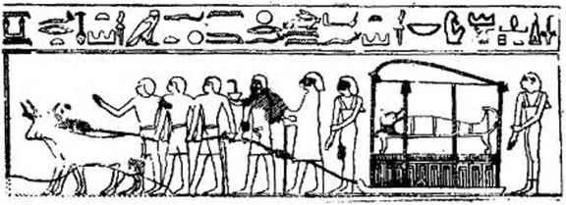

Şekil — 1
yesinde, dünyanın başlangıcında tanrısal sözler söylendi ve tanrılar varlığı bildiler, çünkü Ptah, Memfis tanrıbilimine göre, çoğalma organları olan «yürek ve dil» İdi. O zamandan, İlk kaostan sular ve yerler oluşur oluşmaz» gelecekteki ölülere vaad edilen milyonlarca yıllık yaşamın simgesi olan asanın sahibi idi.
ANUBİS
Ruhları yargılayan Tanrılar mahkemesinin başta gelen kişisi ANUBİS, alemin yaratıldığı gün herkesin yerini saptadı ve bunu öyle yaptı ki herkes için her yer, zamanların sonuna kadar burada da, öbür dünyada da belirlenmiş olsun. S. Mayassis, «ölülerin ve ruhlarının bir koruyucu tanrısıdır ve bu koruma onlara yardım edip, onları arıtmaya yöneliktir,a diye yazıyor. Ona «Kemikleri yeniden toplayan», Aşağı âlemin «Kapı Açıcısı» da denilir.
Kuhun tartılması törenlerinin tamamlanması için, ölüyü karşılayıp, elinden tutarak Osiris’in karşısına götüren odur. Hareketlerin, mekânların, şekillerin, sayıların, gezegenlerin muhasebecisidir. O ayni zamanda sihir metinlerinin her ay canavarların yutmak istedikleri ve konstellasyonlar arasından T h o t görünür görünmez geriye kustukları ay’ın da koruyucusudur.
Başka tanrıların sevgili kâtibidir. çünkü Yüz Kapılı Teb’de hüküm sürecek daha doğmamış firavunların İsimlerini Hellopolls’- ın kutsal ağacının yapraklarına yazan odur. Karanlıkların ışığı olan Seth’ln ışığının zıddına (dünyanın uzaya uzayan gölge- konisi ışığının) her ruh güneş ışığını almadan oraya dalacak Ölülerin bedenlerini bırakır bırakmaz geçtikleri on iki burç ışığının zıddı olan o karanlık ışıktan farklı olarak Anubis’in ışığı pırıl pırıl ve Osiris’in önünde temiz çıkmış ruhlar İçin mutluluk vericidir. Bu bir ışık merdiveni’dir. Güneş yaratılmadan evvelki ilk yaratılış ışığıdır. Kozmik yumurta, Anubis’in ışığı ile aydınlandı. Yaşayanlara şafak ne ise bu ışık da ölü için aynı şeydir; o, onun «güne çıkış»ını sağlayacak ışıktır. S. Mayassis «Anu- bis’ln ışığı öbür dünyaya giriş veya ruhlar dünyasına çıkıştır» diye yazmaktadır.
OSİRİS
OSİRİS de ölülerin koruyucu tanrısıdır. Bütün doğan şeylerin simgesi olduğundan ölüler arasındaki yeri tamdır; çünkü ölüler, galaksilerin dönendiği gök nehirlerinde ebediyen dolaşmaya başlamadan, belki de evren dediğimiz, başlangıç ve oluş olan ışıklı ruhların arasında, artık belleği olmayan zamanda gelişmeye başlamadan, İkinci bir defa daha doğacaklardır. Bu dünya uzayın tanınmaz bedeninde ölü bir hücre, ölü bir dünya haline gelinceye kadar Osiris, yeryüzünde biten her buğday tanesinde, ne kadar ilkel olursa olsun her hayat parçacığında, ölülerin «kalbi ve yüzü» olunca onlara yöneltilen her bakışta, Nil’in taşma zamanındaki ter gibi, ellerinden ve ayaklarından süzülen her su damlacığında, yeniden, çoğalarak doğacaktır. Osiris, yeryüzü veya uzayda olsun, yaşamsal etkinliktir, ve bir tanrının görünür şekli altında ölülere yeniden canlanmayı vaad etmek için, ve sonuçta Osiris’in şaşaası ile yeniden canlanacaklarını vaad etmek İçin onların dünyasına iner. Çünkü kendini temize çıkarmış her ölü, tıpkı toprağın bağrına düşmüş bir buğday tanesi gibi, evrenin derinliklerinde bir hayat tomurcuğudur. Osiris’in, destânî devirlerin ilk firavununun zaferi, kutsal kenti olan Aby- dos üzerinde yeniden parlasın, ölülerin koruyucusu tanrı, yaşayanların nefesini ebediyen beslesin... Daima, aydınlık kabirlerinde, ölüler «Gökyüzünün Anası» tanrıça Nout'un kolları Arasındayken, Osiris'in etkileri onların organlarını canlandırsın, kemiklerini birleştirsin, sihir merasimlerine göre çapraz sarılmış sargılan olan ölüler Osiris’te kişileşsin, yeniden doğarak. O’ou çoğaltsınlar, k a'ları — Kuş-ruhları, ezoterik dubleleri — İalou alanlarının güzelliklerine açılsın. O Osiris'in karısı, sihirbaz İsis ağlasın; o İsis ki insanlara bedenlerinin çürümemesi için ne yapmak gerektiğini, iç organları ayrılıp vazolara konulduktan sonra bedenin nasıl mumyalanacağını öğretti; o İsis ki, kardeşi Seth tarafından öldürülmüş sevgilisini, bütün Mısıra dağılmış ölüsünün — erkeklik organı hariç; çünkü onu nehirde bir balık (oxyr- hynque) yutmuştu — on üç parçasını bulduktan sonra, dirilt- mişti. Abydos’takl ünlü nekropolde (ölüler kenti) Osiris'in lâhdi bir yeniden dirilme sahnesini canlandıran nefis bir kabartma vardır. San'atkâr «ölüler Kitabı»nda yazılı olanı elindeki mater- yele çok güzel bir biçimde yansıtmıştır. Burada, firavun I. Seti’- nin dirilişini görüyoruz. Kral lahdin üzerine uzanmıştır. İsis sağında, Horus solunda ayaktadır. Firavunların başı üzerinde uçan tanrıların simgesi Mout* akbabası, Asur’da, Asurbanipal’ln başı üzerindeki gibi, kanatlarını kapatmış, sabit bakışlarla kralın yüzünü gözetlemektedir. Çünkü Abydos gecesinde, firavun ölüm- süzleşecektir. Vaktiyle Osiris'in olduğu gibi - A. Erman'ın yazdığına göre «bir fantom - ruh olarak değil, bedeninin tam bir dirilişi ile uyanacaktır. Çünkü tanrılar Osiris’in organlarını yerli yerine koymuşlar, başını kemiklerine eklemişler, kalbini yeniden göğsüne yerleştirmişlerdir». Râ’nın oğlu firavun gibi, Osiris’te doğacak ölü İçin de ayni şey olacaktır. Piramit metinlerinde yazıldığı, I. Seti'nin dirilişini gösteren kabartmada olduğu gibi, İsis ve Horus ölüyü kutsayacaklar ve ona «Kalk ve uyan!» diyeceklerdir. Ve ölüler yeryüzünü uzaklaşan ölüler gibi değil, gitmekte olan canlılar gibi terkedeceklerdir. Bu ölü firavunlar Osiris’e doğru gidecekler ve onca kez dinledikleri rahibin sözlerini hatırlayacaklardır: «Osiris, sana doğru yükseliyorum... Temizliğim ellerimdedir. Tanrıça Tefnout’-
Mout: Gerçek
un önünden geçtim ve tanrıça beni temizledi... Ben bir rahibim ve bu mabedin rahiplerinden birinin oğluyum...» Defalarca işittiğini yeniden hatırlayacaktır : «Bağ çözüldü, bu kapıyı geçmek için bilekler serbest kaldı. Üstümdeki bütün kötülükleri yere attım.» Hepsi Osiris’e doğru gideceklerdir. Yüzleri yeniden hayat ve güç bulacaktır; burun delikleri kuzey rüzgâ-rlarının serinliğini duyacaktır. Gökyüzünün İalou tarlalarında buğdayların büyüdüğünü göreceklerdir. Gecenin Kapılan önünde bırakmış olacakları yaşayanlar, kutsanmış ruhlara, her yönden adaklar getirecekler ve bunları kutsal sularla ıslatacaklardır. Evet, hepsi birbiri ardından dirilecek, kalbi çarpmayan Osiris’in önünde ebediyen duracaklardır. İsterlerse ve eğer doğrulurdan bulunurlarsa, her gece öbür dünyanın on İki bölgesinde yüzen kayıkta oturabilecekler, tanrısal Kedi’yi Heliopolis'in kutsal ağacını yardıktan sonra, İç organlarını ışıklı tayflar önünde, Skarabe Khepre'yi, Üst İdareciler sıralanmasını görecekler ve şöyle haykıracaklardır : *Ey! Güçlü Osiris! Biraz önce doğdum! Bana bak, az evvel doğdum! »
SETH
SETH, typhon hayvanı başlı kötülük prensibi, karanlıkların akıl almaz kaynaşmasını, bizi taşıyan dünyanın altında düşünülen bu harabiyet bölgelerindeki bozucu her şeyi kişileştirir. Kendisine «pislik» attığı için Horus onun husyelerini (testls) koparmış, böylece, Plutarque’ın söylediği gibi, ondan kudretini ve etkinliğini almıştır. Mısırlılar Coptos’da, Seth’in erkeklik uzvunu ellerinde tutan Horus’un bir heykelini dikmişlerdir. Silueti titremeden göz önüne getirilemeyen Seth, ünlü lanetlemelerle davet edilir. Bununla birlikte, bir çok milleti yenen II. Ramses, bir mabedin kapısına kendisinin Seth’in dostu olduğunu yazdırmıştır. Siyah domuz seth her ay, ay’ı yutar; çünkü Osiris’in ruhu oraya sığınmıştır. Bu Horus - Seth çatışması, bu evrensel mitos, sonu gelmez iyi ve kötü savaşıdır. Dünyanın başlangıcından beri şu veya bu biçimde ortaya çıkar. Basan şurada yatışır, bazan orada alevlenir. Ölmüş eski zamanların gecesinden ve gelecek zaman-
larda, insanları yapan tanrıların ortaya çıkardıkları bazan saf olmayan bu alev, sonu gelmez ikilik : (düalizm)’dir.
HORUS
Yirmi değişik şekil altında HORUS Mısır panthâonunun (tanrılar gurubunun) en büyük tanrılarındandır. O, Louvre Müzesinde görebileceğimiz, firavunun önünde zarif kutsama Jestini tekrarlayan atmaca başlı (hieracoc6phale) Horus’tur. Edfou’da, kutsalların kutsalının mabet kapısının kulelerinin on dört katiyle korunduğu, şabin başlı acımasız Horus’da görülebilir. Bedenlerin Açıcısı da denilen Hor - Behoudit, tanrılann zifaf odasının veya çiftleşen canavarların koruyucusudur. Simgesi, şahin kanatlı güneş yuvarlağı, binlerce yıl süresince Mısır’ın ekseri tapınağında onurlu bir yer almıştır. Fakat ruhunuzun derinliklerini araştıracağından hiç kuşkusu olmayan Edfou Horus’unun bakışı ne kadar zalimce bir iz bırakır; mabedin avlusunun yaldızlı ışığında nekadar tedirgin edici, sadece ölülerin tanıdığı bir alemin kapılan önünde ne kadar öbür dünyaya yaraşır bir bakıştır bu...

Şekil – 2 ölü, ölüm sarayına götürülüyor.
Piramit tekstlerinde, Seth’i Horus’la karşı karşıya getiren korkunç savaş İlişkisi anlatılır. Oradan Seth’in nasıl husyelerini (testis) kaybettiği ve Horus’un bir gözünden olduğunu öğreniyoruz. Bu kötülüğü kovalayan, yakalayan ve peşini bırakmayan Horus, özellikle ölüler tarafından saygı görmektedir. Çünkü bu ışık yapılı Horus onların «gözünü açmıştır». Böylece ölüler «onun aracılığı ile görebilecekler», Nil kıyılarında canlı iken yürüdükleri zamanki gibi, adımlarını ebediyete o kadar kolaylıkla yöneltebileceklerdir. önceden yapıtından alıntı yaptığımız S. Mayas- sis şöyle yazmaktadır : «İsis, Osiris'i Horus biçiminde dirilttikten sonra onu gökyüzüne, tanrıların karşısına, yeni şekillere, doğru çıkardı... Eski Mısırlılar, içinden çıktığı eski bir şekilden evrim sonucu oluşan her şekle, çocuk diyorlardı. Genç bir adam, kendi kendinin çocuğu, çocukluğunun oğulu (yetişkin, genç adamın oğlu, ihtiyar da yetişkininkidir). O, önceki şekli üzerindeki yengisi ile yeni nitelikler kazanmıştır. Horus, Osiris'ln yeni bir yaşam biçimidir... Evrim, ruhun yükselişi ve saflaşma yoluyla değişimi, önceki tabiatından, şeklinden çıkarak bir çocuk olunmasına bağlı bir şeydir...» ölmüş Osiris'ten çıkıp îsis’i dölleyen tohum bir Horus - Sothis, aydınlık Horus’tur! «Kardeşin İsis, aşkınla mutlu sana geliyor; onu phallus’un üstüne koyarsın, ve tohumun ona dahil olur.» (Piramitler Tekst'i 632, 1635 - 1636, S. Mayassis çevirisi.) Şu halde ölü Osiris'in kadavrasından çıkan tohum «her şeyi tamam bir Horus'tur» Sothis gibi delici, yani kadavradan çıkan Sothis ışığı gibi, ayni zamanda, Işık Merdiven i’nin birinci basamağı, Samanyolunun ışığı, ölüye milyonlarca yıllık gelecek yaşamına olduğu kadar en son ve en ebedi, kozmik yumurtanın bağrında yanan güneş ışığına erişmek imkânını sağlayacaktır...
«BEYAZ, BÜYÜK, DOĞU GÖK’ÜNDE YÜKSELDİĞİ ZAMAN
TANRILARIN İBADETİNİ GÜZELLİĞİ İLE MUTLAND1RAN HORUS’UN GÖZÜ,
SANA ÖVGÜLER.»
(Jean Capart Çevirisi)
Horus, ayni zamanda ve özellikle Harmakhis «Ufuktaki Horus», ünlü Gizeh Sfenksidir. Defalarca kumlar altında kalmış, ve insanların gayreti ile tekrar ortaya çıkarılmıştır. Doğuya yönelik yüzüyle, hareketsizliği içinde devâsâ, ve sabahın ihtişamına bürünmüş, gerçekten «Ufuktaki Horus»tur. Piramitlerin çevresindeki dokunulmamış, vâsi ölüler şehrini kollayan Horus- Kheprenidir. Göksel eşi Güneşin, bütün doğumların kızıl oluşu gibi, kırmızı kumlar İçinde kırmızı doğacağı noktadan gözlerini ayırmayan Horus - Harmakhis’ttr. Bu Gizeh sfenksi, yıpranmış yüzündeki sonsuz tatlılıkla Horus’tur. O Horus ki beş’ bin yıldır milyonlarca güneşin doğuşunu, tarih öncesi yıkımların, felaketlerin korkunç patlamalarının silinişini görmüştür. Kanının damlalarından tanrıların oluşması için kendisini yaralayan Râ’- nın ruhu, bu Horus’tur. Geçici firavun - tanrı görünüşü ile yaratılışın bütün güçlerinin sahibi olan tanrıdır. Bu Atlant’ların son yaşayanı için anlaşılmaz derler. Bir firavunun Nil’in akış yönünü değiştirdiğini, Musa’nın nankör bir yurdu terk ettiğini görmüş, Sümer ve Akkad’daki kanşıklıkları, Ninive ve Ur’un alevlerinde kaybolan onca halkın feryatlarını, Nlnlve’ll gaddar Asur- banipal’in Teb’e kadar inerek Mısır’ı yıkmaya gelişinden önce Ba- bll ve Kudüs’ün yıkım ve yakımını işitmiştir... Aşık Kleopatra, uygarlıktan aydınlatan veya yıkan zafer veya felâketler karşısında kayıtsız, İnsanı büyüleyici, dengeli «Ufuktaki Horus»u sorguya çekmiştir. Zamanların sonuna kadar, yıpranmış şekli ne olursa olsun, canlılar bir kum çölünde artık onu görmeseler bile, her Mısır gecesinde, her tan ağartısında mevcut, dalma yaşayan Horus olacak, yeryüzü güneşte ısındıkça, ölüler ülkesinin üstüste sıralanmış nekropolierlni gözetecektir.
DAİRE SEMBOLÜ
Karnak’taki küçük Khonsu mabedinde, büyük tanrı heykelinin yakınında ilgi çekici bir seri kabartma vardır. Orada dev mezarlar olan piramitlerin önünde, onları koruyan Sfenks'in arkasında güneş ve -tanrıların çifte yaşamını simgeleyen- yılan tarafından taç giydirilen Horus görülür. IV. Ramses, Tanrıça Ament’e, Amon’la birlikte oturan dişi, «Gizli», bir heykelcik hediye etmiştir; tanrıça, firavunun gözleri arasına, üst ucu oval ve delik olan bir haç (croix ans6e) uzatmaktadır. Bu üst bölümü delikli haç gelecek milyonlarca yılın simge s i’dir. Üstteki yuvarlak ne başlangıcı ne sonu olanın mükemmel imajıdır; ebedî olan ruhu temsil eder; çünkü o, tanrıların ruhsal cevherinden çıkmıştır; haç, İnisiyenin girdiği transı, daha çok, ölüm halini gösterir. Bazı mabetlerde namzetin «haça gerilişi», İnisiyenin bir yatak üzerine rahiplerce haç seklinde yatırılmasın- dandır. Tanrıça Ament’in, üstü delikli haçı firavunun gözleri arasına koyduğunu söylemiştik. Bu sihir hareketinin kendine, göre bir anlamı vardır. Gerçekten Paul Brunton *L' E g y pt e secrète : Gizli Mısır» adlı kitabında ısrarla şu hususa İşaret etmektedir : «Kaşlar arasında İşaret edilen nokta pin e a 1 gud- . d e’nin* yerini gösterir. Guddenin karmaşık İşlevleri henüz ay- dınlanmamıştır. inisiyasyon ilk basamaklarında, yetiştirici (hiérophante) namzedin psişik görüntüleri veya çevresindeki ruhsal varlıkları görebilmesi İçin bu guddenin belli bir etkinliğini harekete geçirir. Bu amaçla kullanılan metot kısmen manyetik. kısmen de çok güçlü tütsülere bağlıdır.» Bundan şu çınar ki tanrıça haçı Ramses’in gözleri arasına koyduğu zaman onun, gerçek sırların açık görünümüne (vision clairvoyante) sahip olması amacında idi. Ancak, inisiyasyonun değişik safhalarında görüp hissettiklerini açıklaması yasaktı. Bunun İçindir ki Horus, ufukların Horus’u, Sırların Bekçisi, onun arkasındaydı ve bir parmağını dudağına götürerek ona susmasını İşaret ediyordu... înisiyasyonun en büyük mabedini, Büyük Piramide yaklaşanlardan koruyan Sfenks de oradaydı... Bunun İçin Karnak’dakl Khonsou mabedinin duvarlarına kazınmış insanların çehreleri inisiyeler için belli bir anlam İfade ediyordu; ezoterik sırların
(x) Diansefaldeki Pineal aygıt İki bölümden oluşur: Retinası, ilkel göz billuru, pigmanter ve periferik hücreleriyle küçük bir gözü andıran bölüm ve diansefalden yukarı çıkan tüb şeklindeki epifiz guddesi. Bu aygıt özellikle Rhynchoedphale’lerde ve bazı sürüngenlerde çok bellidir. Prosaurien’ler de denilen bu ilk bölüm çok eski sürüngenlere benzer. 45 cm. boyunda bir kertenkeleyi andıran ve Yeni Zelanda’nın kuzeyinde, Plenty körfezindeki birkaç adacıkta yaşayan Hateria (Spbenodon punctatus) bu türün tek örneği olup nesil tükenmek üzeredir. Metinde pineal gudde diye anılan bu apareyin bir üçüncü göz kalıntısı olması pek muhtemeldir.
Biologic : Animale, M. Aron etp. Grasse
geometrik anahtarına sahip kim olursa olsun, ölüler dünyasının kapılarını açmasını biliyor ve ebedi yaşamın gizli anlamına nüfuz edebiliyordu: bunun sembolü de delikli haçtan (croix ansée) başka bir şey değildi.
İnisiyasyonların merasimleri, gerçek mezarlara benzeyen loş ve çıplak, kapalı salonlarda (crypte) yapılıyordu. Buralarda sü- jeler hipnotizör rahiplerce uyutuluyor; ışıktan yoksun, gizlice karanlıkların derinliklerine dalmış bu kişiler bazan ordan, ruhen olduğu kadar bedenen de ölü çıkıyorlardı. Ama bedenden ve espriden sembolik olarak ayrılma sınavlarını aşabilenler o kadar yaklaştıkları ölümün dipsiz çukurundan geri geliyor, bu dönüşte beden ve ruh yavaş yavaş olağanüstü bir sıcaklık duymaya başlıyor, insanı serbest bırakan, coşturan, temizleyen ölüm’ü tanıyor, esrarlı bilgiler alıyor ve o zaman Hiç kimsenin bilemeyeceğini biliyorlardı: Öbür alemin ışığı, gecenin on İki saatinin göz Önünde canlanışı, mezarların (mastaba) kuyuları içinde uçan kuş-ruh, mabedin en gizli odasındaki uzun uyanıklık saatleri, onların, yeniden dirilmenin korkutucu sırlarını sezmelerine imkân vermişti. Sırası gelince varlığın bir halinde kaybolabilecekler, başka bir hâl içinde yeniden gözükebileceklerdi. Kardeşi tarafından öldürülen Osiris’in dağılmış organları nasıl toplandı ise (Hâbil ve Kâbil’i hatırlayalım...) kendi dağılmış organlarını toplayabileceklerdi. Hiç kimsenin bilemeyeceği, mumyaların aydınlık tabutlarında uyandıkları zaman sihirli bir ipliğin ucunda sallanan ruhlarının ne anlama geldiğini, üst dereceden rahiplerin manyetik pasları sırasında vücutlarını patlar gibi hissetmelerinin belki bedenlerini tahrip edeceğini, ancak, doğmadan evvel de onların olan şu ışık ruhunun hiçbir zarara uğramayacağı gerçeğini bileceklerdi.
II.BAB